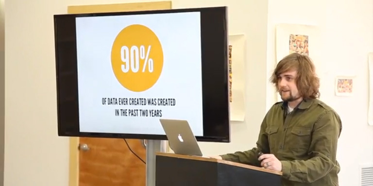

Speaker: Brad Frost

So much in recent years, has been happening digitally. I like how Brad Frost started off and laid it all out as a sort of build up (this is what happened how many years ago and this is what happened last year, and then you were like WOAH WHAT?! ) and it was typically a huge difference so that really made you think about how the world is different today. I like how he said that we're being bombarded with information and data (he showed the screen shot of the phone with all the notifications). I also like how he compared it to whack-a-mole because that's how I feel a lot of the time when I check my Facebook notifications and then look a minute later and then I have a Twitter notification too and then I have to check that. Frost really talks about all the crap that’s out there digitally and how this affects our online and offline experiences (pop up ads, QR codes, jargon, paperwork). It's so easy to create things online but it's also so easy to get lazy too when it comes to creating. Craft has to battle the 90% of crap out there, I see this all the time when I'm online and have to go to nine different websites that were crap before I actually find what I'm looking for: this is what we deal with when technology and data are so prevalent and easy. Now that we're always bogged down with the crap, we really are able to appreciate craft more and seek it out where we can and create it whenever we can.
Three Things I Learned:
- 15 million unique ISBN (new books) were created in 2012 (10% of all books were created that year)
- 3,800,000,000,000 photos have ever been taken and about 10% of them were taken in 2012
- 90% of all data that's ever existed was created in the past two years (video is from 2013)
Speaker: Mathias Bynens
This guy was pretty bland but talked about a lot of interesting points that completely goes against everything I've been taught about HTML, CSS, and Validations. So HTMLs can validate when there are certain errors/dicontinuity with your attributes and elements (talked a bit about leaving out quotes and semi-colons). Some things that you put in your HTML can only be checked by a human being for example, is a block quote really a quote because the computer cannot tell(this make sense, validators aren't reading your content). Validations are definitely good for people who are just starting out with HTML and are making basic mistakes (not closing a tag or something) but I can see as I become more proficient with HTML where I may be better at catching problems on my HTMLs than the validator may. Bynens talked a lot about the symbol & which appears invalid (like right now in Brackets it appears red but if I live preview this HTML it will appear as a &). He was pretty longwinded about it but I think I captured (kind of) what he was getting at now that I see it in Brackets). There are little cheats that you can leave certain tags or symbols out of your HTML and it will still validate, but if I did that at the basic HTML level I'm at, I would be really confused about which tag goes with which part of my HTML.
Three Things I Learned:
- There is a different DTD for different versions of HTML (some don't recognize certain attributes so it's important to look them up to see what is supported)
- P element can only be used in the body of an HTML document (can't use in the header or footer)
- "&+gee+tee" (because I physically cannot write the attribute without closing a tag) can close a tag. Interesting, but why would I want to do this?
Don't Fear the Internet

Part One: Don't Fear the Internet
Part Two: Don't Fear the Browser
Part Three: Starting From Scratch
Speaker: Russ Maschmeyer
This guy was pretty interesting and gave a really good overview of the Internet and then more specifically about HTML and CSS. Most of the stuff I already knew but he delivered it in a visually stimulating manner so the videos were fun to watch. The Internet is not tubes, as some folks believe, but billions of computers connected through wires that we run all over the earth. Our computers have access to other computers called servers. The most basic websites are static websites, which are essentially files, and the number of files goes up depending on how many pages the site has. Coding languages include: HTML, which handles content, and CSS, which handles style. Developer tools allow us to go to websites and check out their HTML and CSS. It's really cool to see what fonts your favorite websites are using by inspecting elements. You can style your website in different ways. Inline styling is not the best but it's highly targeted and also really repetitive and hard to change. Internal CSS stores every style in the head of the HTML. It allows you to apply it to all the same tags but still you would have to change it on every HTML. The best way to style your HTML is external CSS, you can tell every element in every HTML page what style to use. These can become long if they are not consolidated. These videos served as a nice refresher course in the world of HTML and CSS.
Three Things I Learned:
- Browsers render HTML and CSS differently
- Servers are the backbone of the web (store websites and serve them up to computers but you cannot edit the site without the login)
- Websites are collections of files, stored on a server and has an address